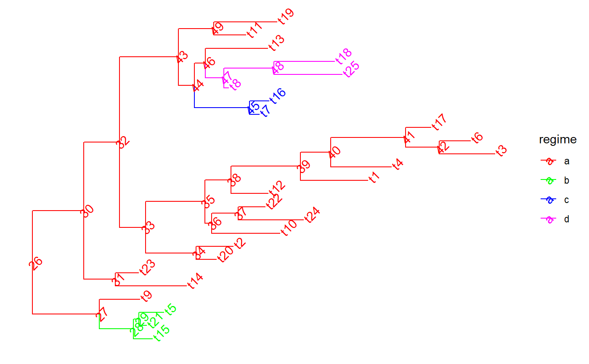
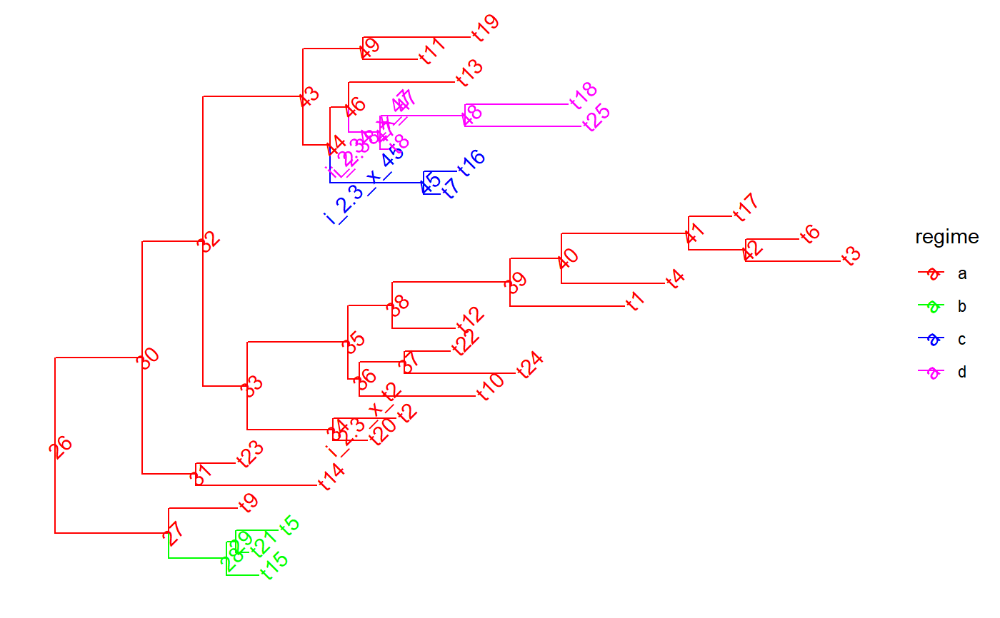
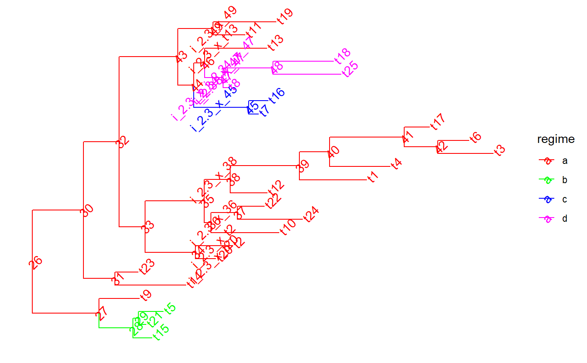

Insert tips or singleton nodes on chosen edges
PCMTreeInsertSingletons.RdInsert tips or singleton nodes on chosen edges
PCMTreeInsertSingletons(tree, nodes, positions) PCMTreeInsertSingletonsAtEpoch(tree, epoch, minLength = 0.1) PCMTreeInsertTipsOrSingletons( tree, nodes, positions = rep(0, length(nodes)), singleton = FALSE, tipBranchLengths = 0.01, nodeLabels = NULL, tipLabels = NULL )
Arguments
| tree | a phylo object |
|---|---|
| nodes | an integer vector denoting the terminating nodes of the edges on which a singleton node is to be inserted. This vector should not have duplicated nodes - if there is a need to insert two or more singleton nodes at distinct positions of the same edge, this should be done by calling the function several times with the longest position first and so on . |
| positions | a positive numeric vector of the same length as nodes denoting the root-ward distances from nodes at which the singleton nodes should be inserted. For PCMTreeInsertTipsOrSingletons this can contains 0's and is set by default to rep(0, length(nodes)). |
| epoch | a numeric indicating a distance from the root at which a singleton node should be inserted in all lineages that are alive at that time. |
| minLength | a numeric indicating the minimum allowed branch-length after dividing a branch by insertion of a singleton nodes. No singleton node is inserted if this would result in a branch shorter than `minLength`. Note that this condition is checked only in `PCMTreeInsertSingletonsAtEpoch`. |
| singleton | (PCMTreeInsertTipsOrSingletons only) a logical indicating if a singleton node should be inserted and no tip node should be inserted. |
| tipBranchLengths | (PCMTreeInsertTipsOrSingletons only) positive numeric vector of the
length of |
| nodeLabels | (PCMTreeInsertSingletons and PCMTreeInsertTipsOrSingletons) a
character vector of the same length as |
| tipLabels | (PCMTreeInsertTipsOrSingletons only) a character vector of the same length as
|
Value
a modified copy of tree.
Functions
PCMTreeInsertSingletonsAtEpoch:PCMTreeInsertTipsOrSingletons:
See also
Examples
set.seed(1, kind = "Mersenne-Twister", normal.kind = "Inversion") tree <- PCMTree(ape::rtree(25)) PCMTreeSetPartRegimes( tree, c(`26`="a", `28`="b", `45`="c", `47`="d"), setPartition = TRUE) # \donttest{ PCMTreePlot( tree, palette=c(a = "red", b = "green", c = "blue", d = "magenta")) + ggtree::geom_nodelab(angle = 45) + ggtree::geom_tiplab(angle = 45)#> [,1] [,2] [,3] [,4] #> [1,] 26 27 0.0000000 0.8612095 #> [2,] 27 28 0.8612095 1.2993066 #> [3,] 28 1 1.2993066 1.5441039 #> [4,] 28 29 1.2993066 1.3699856 #> [5,] 29 2 1.3699856 1.4694518 #> [6,] 29 3 1.3699856 1.6862573 #> [7,] 27 4 0.8612095 1.3798437 #> [8,] 26 30 0.0000000 0.6620051 #> [9,] 30 31 0.6620051 1.0688353 #> [10,] 31 5 1.0688353 1.9817112 #> [11,] 31 6 1.0688353 1.3624386 #> [12,] 30 32 0.6620051 1.1210708 #> [13,] 32 33 1.1210708 1.4534655 #> [14,] 33 34 1.4534655 2.1043359 #> [15,] 34 7 2.1043359 2.3623527 #> [16,] 34 8 2.1043359 2.5828812 #> [17,] 33 35 1.4534655 2.2197761 #> [18,] 35 36 2.2197761 2.3040231 #> [19,] 36 9 2.3040231 3.1793444 #> [20,] 36 37 2.3040231 2.6430960 #> [21,] 37 10 2.6430960 3.4825363 #> [22,] 37 11 2.6430960 2.9897795 #> [23,] 35 38 2.2197761 2.5535511 #> [24,] 38 12 2.5535511 3.0299023 #> [25,] 38 39 2.5535511 3.4457494 #> [26,] 39 13 3.4457494 4.3100889 #> [27,] 39 40 3.4457494 3.8357390 #> [28,] 40 14 3.8357390 4.6130597 #> [29,] 40 41 3.8357390 4.7963570 #> [30,] 41 42 4.7963570 5.2310164 #> [31,] 42 15 5.2310164 5.9435311 #> [32,] 42 16 5.2310164 5.6310108 #> [33,] 41 17 4.7963570 5.1217091 #> [34,] 32 43 1.1210708 1.8781580 #> [35,] 43 44 1.8781580 2.0808502 #> [36,] 44 45 2.0808502 2.7919714 #> [37,] 45 18 2.7919714 2.9136633 #> [38,] 45 19 2.7919714 3.0374599 #> [39,] 44 46 2.0808502 2.2241546 #> [40,] 46 47 2.2241546 2.4637840 #> [41,] 47 20 2.4637840 2.5227184 #> [42,] 47 48 2.4637840 3.1060723 #> [43,] 48 21 3.1060723 3.9823415 #> [44,] 48 22 3.1060723 3.8849869 #> [45,] 46 23 2.2241546 3.0214634 #> [46,] 43 49 1.8781580 2.3334324 #> [47,] 49 24 2.3334324 2.7435165 #> [48,] 49 25 2.3334324 3.1443026id47 <- PCMTreeMatchLabels(tree, "47") length47 <- PCMTreeGetBranchLength(tree, id47) # insert a singleton at 0.55 (root-ward) from node 47 tree <- PCMTreeInsertSingletons(tree, nodes = "47", positions = (length47/2)) # \donttest{ PCMTreePlot( tree, palette=c(a = "red", b = "green", c = "blue", d = "magenta")) + ggtree::geom_nodelab(angle = 45) + ggtree::geom_tiplab(angle = 45)# } # this fails, because the branch leading to node "47" is shorter now (0.55). ggplot2::should_stop( tree <- PCMTreeInsertSingletons( tree, nodes = "47", positions= 2* length47 / 3)) # the tree is the same # \donttest{ PCMTreePlot( tree, palette=c(a = "red", b = "green", c = "blue", d = "magenta")) + ggtree::geom_nodelab(angle = 45) + ggtree::geom_tiplab(angle = 45)# } # we can insert at a position within the edge: tree <- PCMTreeInsertSingletons(tree, nodes = "47", positions = length47/3) # \donttest{ PCMTreePlot( tree, palette=c(a = "red", b = "green", c = "blue", d = "magenta")) + ggtree::geom_nodelab(angle = 45) + ggtree::geom_tiplab(angle = 45)# } # Insert singletons at all branches crossing a given epoch. This will skip # inserting singleton nodes where the resulting branches would be shorter # than 0.1. tree <- PCMTreeInsertSingletonsAtEpoch(tree, 2.3) # \donttest{ PCMTreePlot( tree, palette=c(a = "red", b = "green", c = "blue", d = "magenta")) + ggtree::geom_nodelab(angle = 45) + ggtree::geom_tiplab(angle = 45)# } # Insert singletons at all branches crossing a given epoch tree <- PCMTreeInsertSingletonsAtEpoch(tree, 2.3, minLength = 0.001) # \donttest{ PCMTreePlot( tree, palette=c(a = "red", b = "green", c = "blue", d = "magenta")) + ggtree::geom_nodelab(angle = 45) + ggtree::geom_tiplab(angle = 45)# }